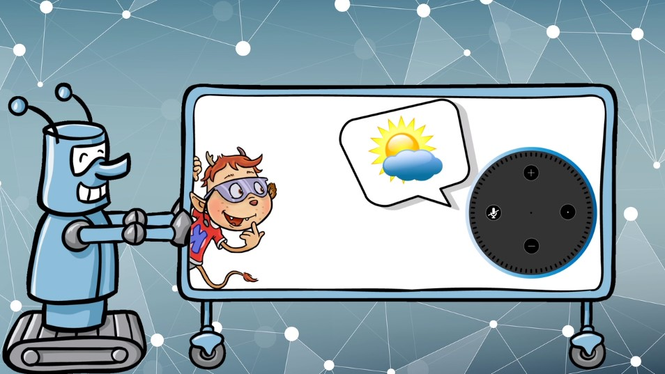

Viele Leute haben heute so eine kleine Box zuhause stehen. Es gibt sie bereits von Apple, Amazon, Google und Microsoft. Aber was kann so eine Box eigentlich und wie funktioniert sie?
Video
Was ist ein Sprachassistent?
Das ist ein Gerät, das du mit deiner Stimme steuern kannst. Wenn du zum Beispiel fragst: „Wie wird morgen das Wetter?“, dann gibt dir die Box eine Antwort.
Das funktioniert über ein kleines Mikrofon, mit dem der Sprachassistent alles hört und aufnimmt. Er kann dir also den ganzen Tag zuhören, und er ist immer mit dem Internet verbunden.

Du kannst mit dem Sprachassistenten auch andere Geräte wie die Heizung oder die Jalousien steuern. Eine vernetzte Wohnung nennt man „Smart-Home“.
Wenn ein Sprachassistent mit so einem Haus verbunden ist, musst du ihm bloß sagen „Schalte das Licht aus“ oder „Schalte das Licht wieder an!“
Du kannst auch sagen, welche Musik du gerade hören möchtest. Ein Sprachassistent lernt schnell und merkt sich alles, was du sagst. Bald weiß er sogar, was deine Lieblingsmusik ist.
Du kannst mit dem Sprachassistenten auch online einkaufen: Sprich einfach deinen Wunsch aus, und schon bald wird er bei dir geliefert.
Aber denk daran: Ein Sprachassistent ist kein Spielzeug! Das alles kann zwar sehr praktisch sein, aber…
… es hat einen großen Nachteil!
Die Sprachassistenten speichern nämlich alles ab, was sie hören, und sie leiten die Infos auch an andere Firmen weiter.
Firmen wie Apple, Amazon, Google und Microsoft wissen daher oft mehr über dich, als du vielleicht möchtest. Sie nutzen dieses Wissen unter anderem dazu, die Werbung auf dich anzupassen. Eine Folge davon ist, dass du mit Werbung überschüttet wirst – für bestimmte Dinge, die du kaufen sollst.
Wenn wir solche Geräte nutzen, sollten wir immer auch an den Datenschutz denken. Das bedeutet, dass wir private Daten, persönliche Infos und Geheimnisse schützen.
Es gibt Sachen, die fremde Menschen von dir nicht wissen sollten!
💭 Sprechblase Es gibt Sachen, die fremde Menschen von dir nicht wissen sollten!
Wenn du einen Sprachassistenten zuhause hast, kannst du aber nicht wissen, wer dir gerade zuhört. Selbst wenn keine echten Menschen zuhören, speichert der Sprachassistent Vieles ab, was er hört!
Wie kannst du dich also schützen?
Wenn du nicht willst, dass dir jemand ständig zuhören kann, dann schalte den Sprachassistenten vollständig aus oder nimm ihn vom Strom. So können die großen Firmen nicht mehr hören, was bei dir zuhause los ist. Wenn ihr keinen Sprachassistenten zuhause habt, müsst ihr euch vielleicht auch keinen kaufen. Denn so ein Gerät ist zwar sehr praktisch, aber auch sehr neugierig.
Der Schutz deiner privaten Daten sollte dir wichtiger sein.